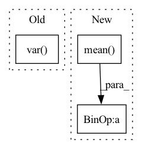

Pattern ID :32219
Before Change
locale_ = self.wf.local_energy(pos)
e_ = locale_.mean()
v_ = locale_.var()
print("epoch %d loss %f" %(n,cumulative_loss))
print("variance : %f" %v_)
print("energy : %f" %e_)After Change
obs_dict = self.get_observable(obs_dict,pos)
print("epoch %d loss %f" %(n,cumulative_loss))
print("variance : %f" %np.var(obs_dict["local_energy"][-1]))
print("energy : %f" % np.mean( obs_dict["local_energy"][-1]) )
print("distance : %f" %self.wf.atomic_distance() )
if self.sampler.nstep > 0:In pattern: SUPERPATTERN
Frequency: 3
Non-data size: 3
Instances Fragment ID: 94231743
Project Name: nlesc-jcer/qmctorch
Commit Name: 37d3f7cd139f4d92d321cada5405fa11bb6c9574
Time: 2019-06-19
Author: nicolas.gm.renaud@gmail.com
File Name: pyCHAMP/solver/deepqmc.py
M Class Name: DeepQMC
N Class Name: DeepQMC
M Method Name: train(10)
N Method Name: train(10)
M Parent Class: SOLVER_BASE
N Parent Class: SOLVER_BASE
M File Name: pyCHAMP/solver/deepqmc.py
N File Name: pyCHAMP/solver/deepqmc.py
M Start Line: 85
M End Line: 143
N Start Line: 105
N End Line: 146
Before Change
if self.reduction == "feature":
x, y = x.reshape(-1, x.shape[-1]), y.reshape(-1, y.shape[-1])
mse_loss = self.criterion(x, y)
loss = 1 - mse_loss / torch.var( y)
if self.negative:
loss = -loss
return loss
After Change
x_reshape, y_reshape = x, y
mse_loss = self.criterion(x_reshape, y_reshape)
if self.reduction == "feature":
mse_loss = mse_loss.mean(dim=0)
var = y_reshape.var(dim=0)
else:
var = y_reshape.var()
loss = 1 - mse_loss / var
if self.negative:
loss = -loss
return loss Fragment ID: 94231733
Project Name: neurotorch/neurotorch
Commit Name: 953241a3c2de39eb5d02cc9690ce3f2051e600db
Time: 2022-09-13
Author: 50332514+JeremieGince@users.noreply.github.com
File Name: src/neurotorch/metrics/losses.py
M Class Name: PVarianceLoss
N Class Name: PVarianceLoss
M Method Name: forward(3)
N Method Name: forward(3)
M Parent Class: torch.nn.Module
N Parent Class: torch.nn.Module
M File Name: src/neurotorch/metrics/losses.py
N File Name: src/neurotorch/metrics/losses.py
M Start Line: 79
M End Line: 81
N Start Line: 80
N End Line: 89
Before Change
def concordance_cc2(r1, r2):
mean_cent_prod = ((r1 - r1.mean()) * (r2 - r2.mean())).mean()
return (2 * mean_cent_prod) / (r1.var() + r2.var() + (r1.mean() - r2.mean()) ** 2)
def mse(preds, labels):After Change
"""
Computes batch element-wise CCC.
"""
r1_mean = r1.mean(dim=-1, keepdims=True)
r2_mean = r2.mean(dim=-1, keepdims=True)
mean_cent_prod = ((r1 - r1_mean * (r2 - r2_mean))).mean(dim=-1, keepdims=True)
ccc = (2 * mean_cent_prod) / (r1.var(dim=-1, keepdims=True) + r2.var(dim=-1, keepdims=True) + (r1_mean - r2_mean) ** 2)
if reduction == "none":
return ccc Fragment ID: 94231729
Project Name: sailordiary/m3f.pytorch
Commit Name: 165fc672841057e5f45726340675d39d9be4dcbc
Time: 2020-01-30
Author: me@sailorzhang.com
File Name: models/utils.py
M Class Name: AnonimousClass
N Class Name: AnonimousClass
M Method Name: concordance_cc2(3)
N Method Name: concordance_cc2(2)
M Parent Class:
N Parent Class:
M File Name: models/utils.py
N File Name: models/utils.py
M Start Line: 7
M End Line: 8
N Start Line: 6
N End Line: 19